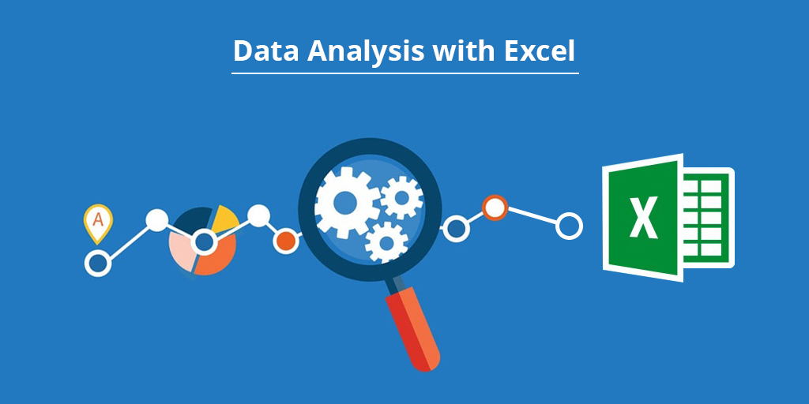

This project involves analyzing sales and profit data to understand trends over time,
focusing on metrics like monthly profit, year-to-date profit, and annual totals.
The goal is to identify key performance insights for different brands and suppliers.

In this project we clean housing data in SQL Server.

Data Exploration of covid 19 Dataset in SQL Server.

Developed a comprehensive Tableau dashboard leveraging SQL Server for in-depth data exploration and analysis.

Designed a dynamic dashboard in Excel to visualize bike sales data, incorporating pivot tables and advanced formulas for comprehensive insights. This project showcases proficiency in data organization, analysis, and creating visually appealing reports within Excel..
In this project we look at what variables effect the gross revenue from movies .
This project explores the intersection of gender dynamics and economic systems, analyzing how wage gaps, occupational segregation, and consumer behavior contribute to perpetuating inequality. By leveraging SQL to examine datasets on gender pay disparities, spending patterns, and unpaid labor, it sheds light on how capitalism disproportionately benefits from patriarchal structures..

This Project demonstrates a step-by-step approach to cleaning, transforming, and analyzing layoff data. It includes techniques for deduplication, data standardization, calculating trends and metrics, and generating insights into layoff patterns across companies, industries, and locations..